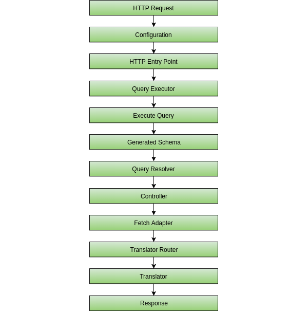
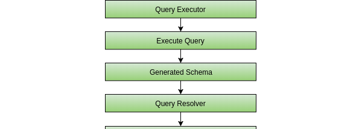

Principles & Architecture
This framework is built on a few tenants:
- Ease of use: This section and Getting started should be good enough to start using it. Really, the only thing you'd need to know are what schema you want, and which data store you want to use.
- Reduced boilerplate code: This framework uses heavy abstractions over the excellent WebOnyx GraphQL PHP library. It is, however, a very configuration-over-convenience library, which the framework aims to correct.
- Assisting the developer: By throwing helpful error messages, such as informing that a controller is missing a function to get X field, or that a translator is missing for Y type.
- Optimization: All the last 3 points should have a minimal impact on the optimization.
Workflow
When working with the library, you should follow this workflow:
- Create a GraphQL schema to expose.
- Create a GraphQL entry point.
- Create a Controller for each type in the GraphQL schema.
- Create a FetchAdapter for each type in the GraphQL schema.
- Test your API.
See Getting Started for a better starting example.
Architecture

Here is the flow of a query in the framework, cut piece-by-piece.

We have received a GraphQL request from a client. The GraphQLConfiguration object is built and used throughout the entire framework.
The HTTP entry point the takes the configuration and begin executing the query as any other by passing the arguments and query text to the QueryExecutor, which acts as the core object of the framework.

The QueryExecutor executes the query on the auto-generated schema. The Generated Schema then reaches the Query Resolver, which is used to determine the correct controller and controller function to execute.
Once the correct controller is determined, its resolve function is executed.
The Fetch Adapter is used by the controller to get a specific query result.

The Fetch Adapter communicates with a translator to convert the given entities to their target GraphQL DTO correctly.
Finally, the result is returned to the client.